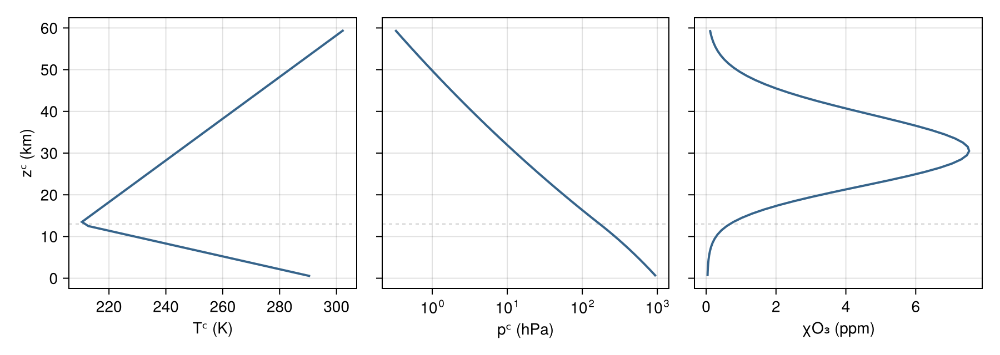
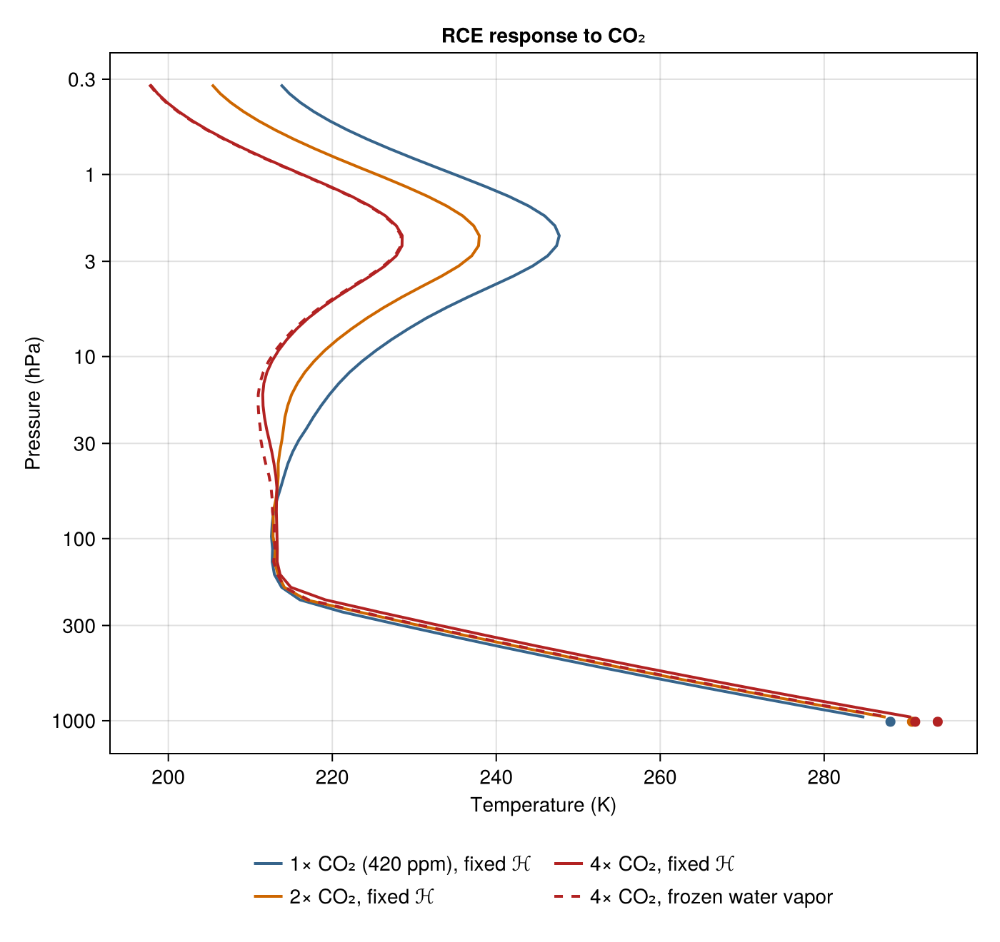

Manabe radiative-convective equilibrium with ecCKD
What surface temperature does an atmospheric column choose, and how much does it warm when CO₂ doubles? Manabe and Wetherald answered those questions in 1967 (J. Atmos. Sci., doi: 10.1175/1520-0469(1967)024<0241:TEOTAW>2.0.CO;2). This page runs a Manabe-style version of that calculation: radiation heats and cools each level, convection instantly clamps the column onto a critical lapse-rate profile anchored at the surface, the surface temperature is solved from top-of-atmosphere energy balance, and — their famous choice — relative humidity stays fixed, so water vapor rises and falls with temperature. The formulation follows the RRTMGP.jl Manabe tutorial: level temperatures are prognostic, convective adjustment is a one-line clamp at a fixed trial surface temperature, and the surface temperature is solved externally from top-of-atmosphere balance. RRTMGP is a source reference only — nothing here imports or calls it.
Configuration
The experiment's headline parameters and physical constants:
using NumericalRadiation
using NCDatasets # activates the NetCDF loader for the ecCKD file
using CairoMakie
using Printf
Γ = 6.5e-3 # critical lapse rate, K m⁻¹ (Manabe-Wetherald)
μ₀ = cosd(47.9) # cosine of the solar zenith angle
S₀ = 509 * μ₀ # horizontal TOA shortwave flux, W m⁻²
α = 0.3 # surface albedo
ℋₛ = 0.77 # Manabe-Wetherald surface relative humidity
water_vapor_floor = 4.8e-6 # stratospheric χH₂O floor, mole fraction
χCH₄ = 1.9e-6 # present-day global means for the
χN₂O = 3.4e-7 # well-mixed trace gases
N = 60 # physical layers, uniform in altitude
zₜ = 60e3 # m; one isothermal lookup-boundary layer above
pₛ = 101_325 # Pa
g = 9.80665 # gravitational acceleration, m s⁻²
cᵖᵈ = 1004 # isobaric heat capacity, J kg⁻¹ K⁻¹
σ = 5.670374419e-8 # Stefan-Boltzmann constant, W m⁻² K⁻⁴
Rᵈ = 287.05 # dry-air gas constant, J kg⁻¹ K⁻¹
mᵈ = 0.028964 # dry-air molar mass, kg mol⁻¹
mᵛ = 0.018016 # water molar mass, kg mol⁻¹
day = 86_400 # sThe atmospheric profile and grid
The initial state is an analytic midlatitude-summer standard atmosphere, transcribed locally from RRTMGP.jl's standard_atmosphere source (AFGL-style two-segment temperature, exact hydrostatic pressure, and log-pressure-Gaussian ozone). Transcribed, not imported. The tropopause sits at zᵗʳ and the stratosphere warms at the rate Γˢᵗ:
T₀ = 294 # K, midlatitude-summer surface temperature
zᵗʳ = 13e3 # m, idealized tropopause height
Γˢᵗ = 2e-3 # K m⁻¹, idealized stratospheric warming rate
Tᵗʳ = T₀ - Γ * zᵗʳ # K, tropopause temperature
pᵗʳ = pₛ * (Tᵗʳ / T₀)^(g / (Rᵈ * Γ)) # Pa, tropopause pressure
standard_temperature(z) = z ≤ zᵗʳ ? T₀ - Γ * z : Tᵗʳ + Γˢᵗ * (z - zᵗʳ)
function standard_pressure(z)
pᵗˢ = pₛ * (standard_temperature(z) / T₀)^(g / (Rᵈ * Γ))
pˢᵗ = pᵗʳ * (standard_temperature(z) / Tᵗʳ)^(-g / (Rᵈ * Γˢᵗ))
return ifelse(z ≤ zᵗʳ, pᵗˢ, pˢᵗ)
end
standard_ozone(p) = 3e-8 + 7.5e-6 * exp(-(log(p / 1_200))^2 / (2 * 1.2^2))Faces (levels) are uniform in altitude from the surface to zₜ, stored TOA-first (our column convention, pressure increasing downward). Following the Oceananigans convention, superscript ᶠ marks face quantities and superscript ᶜ marks cell centers (layers). One separate isothermal lookup-boundary layer spans from the gas-optics table's minimum pressure down to the top physical face; it is excluded from all prognostic, adjustment, and convergence arrays — its temperature and gas state are copied from the top physical face before every radiation call and its heating is discarded. Extension-column arrays carry the suffix _ext; index 1 is the extension layer and physical layer j sits at j + 1.
gas_optics = read_reference_ecckd_gas_optics("32x32"; names = (:composite, :h2o, :o3, :co2, :ch4, :n2o))
zᶠ = collect(range(zₜ, 0; length = N + 1)) # faces TOA-first, so pressure increases with index
zᶜ = 0.5 .* (zᶠ[1:N] .+ zᶠ[2:N+1])
pᶠ = standard_pressure.(zᶠ)
pᶜ = standard_pressure.(zᶜ)
table_minimum_pressure = first(gas_optics.pressure_grid)
table_minimum_pressure < pᶠ[1] || error("lookup-table minimum pressure does not lie above the physical top")
N_ext = N + 1 # extension layer + physical layers
pᶜ_ext = vcat(0.5 * (table_minimum_pressure + pᶠ[1]), pᶜ) # arithmetic midpoint
pᶠ_ext = vcat(table_minimum_pressure, pᶠ) # for the extension only
χO₃ = standard_ozone.(pᶜ)
χO₃_ext = vcat(χO₃[1], χO₃) # extension copies the top layerThe discretized initial state: adjacent-face-mean cell-center temperature, cell-center pressure, and ozone, with the tropopause zᵗʳ marked:
Tᶠ₀ = standard_temperature.(zᶠ)
Tᶜ₀ = (Tᶠ₀[1:N] .+ Tᶠ₀[2:N+1]) ./ 2
fig = Figure(size = (900, 320))
axT = Axis(fig[1, 1]; xlabel = "Tᶜ (K)", ylabel = "zᶜ (km)")
axp = Axis(fig[1, 2]; xlabel = "pᶜ (hPa)", xscale = log10)
axχ = Axis(fig[1, 3]; xlabel = "χO₃ (ppm)")
linkyaxes!(axT, axp, axχ)
for ax in (axT, axp, axχ)
hlines!(ax, zᵗʳ / 1000; color = (:gray, 0.4), linestyle = :dash, linewidth = 1)
end
lines!(axT, Tᶜ₀, zᶜ ./ 1000; color = :steelblue4, linewidth = 2)
lines!(axp, pᶜ ./ 100, zᶜ ./ 1000; color = :steelblue4, linewidth = 2)
lines!(axχ, 1e6 .* χO₃, zᶜ ./ 1000; color = :steelblue4, linewidth = 2)
hideydecorations!(axp, ticks = false, grid = false)
hideydecorations!(axχ, ticks = false, grid = false)
The two-segment temperature over an exact hydrostatic pressure, and the log-pressure-Gaussian ozone layer peaking near 30 km; the dashed line marks the tropopause zᵗʳ.
The humidity closure
Fixed relative humidity ℋ on cell-center temperatures — Manabe and Wetherald's profile shape, Magnus saturation vapor pressure pᵛ⁺, and a stratospheric floor — applied to the full radiation column including the extension layer:
pᵛ⁺(T) = 610.94 * exp(17.625 * (T - 273.15) / (T - 30.11))
function fixed_relative_humidity!(χH₂O_ext, Tᶜ_ext)
for k in eachindex(χH₂O_ext)
ℋ = max(ℋₛ * (pᶜ_ext[k] / pₛ - 0.02) / 0.98, 0)
pᵛ = ℋ * pᵛ⁺(Tᶜ_ext[k])
χH₂O_ext[k] = max(pᵛ / max(pᶜ_ext[k] - pᵛ, 1), water_vapor_floor)
end
return χH₂O_ext
endThe radiative-convective march
equilibrate! marches the column at a fixed trial surface temperature, in the RRTMGP tutorial's exact order and stopping rule: clamp faces onto the critical profile $T_c(p) = Tₛ (p/pₛ)^{Γ R^{\mathrm{d}}/g}$; set cell-center temperatures to adjacent-face means; update humidity and fluxes; stop when one successive adjusted face profile changes by less than tolerance (kelvin); otherwise map cell-center heating to face tendencies (interior faces take the mean of the adjacent cell rates, the end faces take the edge rate) and march with the tutorial's ±2 K increment clamp, up to max_steps steps.
function equilibrate!(Tᶠ, Tₛ; χCO₂, ozone = χO₃_ext, fixed_water_vapor = nothing,
Δt = 8 * 3_600, max_steps = 20_000, tolerance = 1e-4)
Tᶜ_ext = zeros(N_ext)
Tᶠ_ext = zeros(N_ext + 1)
χH₂O_ext = zeros(N_ext)
nᵈ = zeros(N_ext)
gases = (composite = zeros(N_ext), h2o = zeros(N_ext), o3 = zeros(N_ext),
co2 = zeros(N_ext), ch4 = zeros(N_ext), n2o = zeros(N_ext))
atmosphere = ColumnAtmosphere(; pressure_layers = pᶜ_ext, pressure_interfaces = pᶠ_ext,
temperature_layers = Tᶜ_ext, temperature_interfaces = Tᶠ_ext,
gases, surface = nothing, geometry = (cos_zenith = μ₀,))
longwave = LongwaveOptics(gas_optics, atmosphere) # caller-owned per-g-point optical properties
shortwave = ShortwaveOptics(gas_optics, atmosphere)
fluxes = RadiativeFluxes(atmosphere) # caller-owned broadband fluxes on the faces
shortwave_boundary = ShortwaveBoundaryConditions(toa_shortwave_down = S₀, surface_albedo = α)
surface_emission = surface_longwave_emission(gas_optics, Tₛ)
longwave_boundary = LongwaveBoundaryConditions(surface_longwave_up = surface_emission)
Q = zeros(N_ext)
Ṫᶠ = zeros(N + 1)
previous = zeros(N + 1)
solve_radiation!() = begin
# extension layer: isothermal with, and gas state tied to, the top face
Tᶜ_ext[1] = Tᶠ[1]
@views @. Tᶜ_ext[2:N_ext] = (Tᶠ[1:N] + Tᶠ[2:N+1]) / 2
Tᶠ_ext[1] = Tᶠ[1]
@views Tᶠ_ext[2:N_ext+1] .= Tᶠ
if isnothing(fixed_water_vapor)
fixed_relative_humidity!(χH₂O_ext, Tᶜ_ext)
else
χH₂O_ext .= fixed_water_vapor
end
χH₂O_ext[1] = χH₂O_ext[2] # extension copies the top physical layer
for k in 1:N_ext
nᵈ[k] = (pᶠ_ext[k + 1] - pᶠ_ext[k]) / (g * (mᵈ + mᵛ * χH₂O_ext[k]))
gases.composite[k] = nᵈ[k]
gases.h2o[k] = χH₂O_ext[k] * nᵈ[k]
gases.o3[k] = ozone[k] * nᵈ[k]
gases.co2[k] = χCO₂ * nᵈ[k]
gases.ch4[k] = χCH₄ * nᵈ[k]
gases.n2o[k] = χN₂O * nᵈ[k]
end
optical_properties!(longwave, shortwave, gas_optics, atmosphere)
radiative_fluxes!(fluxes, CloudlessLongwave(), longwave, atmosphere, longwave_boundary)
radiative_fluxes!(fluxes, CloudlessShortwave(), shortwave, atmosphere, shortwave_boundary)
end
critical = Tₛ .* (pᶠ ./ pₛ) .^ (Γ * Rᵈ / g)
fill!(previous, 0)
final_difference = Inf
steps = max_steps
converged = false
for step in 1:max_steps
@. Tᶠ = max(Tᶠ, critical)
solve_radiation!()
final_difference = maximum(abs, Tᶠ .- previous)
if final_difference < tolerance
steps = step
converged = true
break
end
previous .= Tᶠ
heating_rates!(Q, fluxes, atmosphere; gravity = g, heat_capacity = cᵖᵈ)
# discard the extension tendency Q[1]; physical layer j is Q[j + 1]
Ṫᶠ[1] = Q[2]
Ṫᶠ[N+1] = Q[N_ext]
@views @. Ṫᶠ[2:N] = (Q[2:N_ext-1] + Q[3:N_ext]) / 2
@. Tᶠ += clamp(Δt * Ṫᶠ, -2, 2)
end
return (; Tᶠ = copy(Tᶠ), Tₛ, converged, final_difference, steps,
days = steps * Δt / day,
χH₂O = copy(χH₂O_ext),
Tᶜ_ext = copy(Tᶜ_ext),
extension_temperature = Tᶜ_ext[1],
olr = fluxes.longwave_up[1],
asr = fluxes.shortwave_down[1] - fluxes.shortwave_up[1])
endThe energy-balance solve
rce wraps the march in a safeguarded root solve for ASR − OLR = 0. The generic bookkeeping expands the initial guesses (doubling, hard-bounded to [150, 350] K) until the imbalance changes sign, then iterates a secant step with a bisection fallback:
function bracketed_secant(toa_imbalance, guesses; imbalance_tolerance = 0.1,
max_expansions = 8, max_iterations = 12)
lo, hi = min(guesses...), max(guesses...)
ΔF_lo, state_lo = toa_imbalance(lo)
ΔF_hi, state_hi = toa_imbalance(hi)
expansion = 8
expansions = 0
while sign(ΔF_lo) == sign(ΔF_hi)
expansions < max_expansions || error("no sign-changing Tₛ bracket after $max_expansions expansions")
saturated = lo == 150 && hi == 350
saturated && error("Tₛ bracket saturated the [150, 350] K domain without a sign change")
lo = max(lo - expansion, 150)
hi = min(hi + expansion, 350)
expansion *= 2
expansions += 1
ΔF_lo, state_lo = toa_imbalance(lo)
ΔF_hi, state_hi = toa_imbalance(hi)
end
Tₛ, ΔF, state = abs(ΔF_lo) < abs(ΔF_hi) ? (lo, ΔF_lo, state_lo) : (hi, ΔF_hi, state_hi)
a, b, ΔF_a, ΔF_b = lo, hi, ΔF_lo, ΔF_hi
iterations = 0
step_size = Inf
while abs(ΔF) > imbalance_tolerance || step_size > 0.01
iterations < max_iterations || error("surface-temperature solve exceeded $max_iterations iterations")
candidate = ΔF_b == ΔF_a ? (a + b) / 2 : b - ΔF_b * (b - a) / (ΔF_b - ΔF_a)
(a < candidate < b) || (candidate = (a + b) / 2)
ΔF_c, state_c = toa_imbalance(candidate)
if sign(ΔF_c) == sign(ΔF_a)
a, ΔF_a = candidate, ΔF_c
else
b, ΔF_b = candidate, ΔF_c
end
step_size = abs(candidate - Tₛ)
Tₛ, ΔF, state = candidate, ΔF_c, state_c
iterations += 1
end
return Tₛ, state, iterations, expansions
end
function rce(χCO₂; ozone = χO₃_ext, fixed_water_vapor = nothing, Tₛ_guesses = (285, 295),
warm_start = nothing, imbalance_tolerance = 0.1, max_expansions = 8, max_iterations = 12)
Tᶠ = isnothing(warm_start) ? copy(Tᶠ₀) : copy(warm_start)
toa_imbalance(Tₛ) = begin
state = equilibrate!(Tᶠ, Tₛ; χCO₂, ozone, fixed_water_vapor)
state.converged || error("inner equilibration at trial Tₛ = $Tₛ did not converge")
ΔF = state.asr - state.olr
isfinite(ΔF) || error("nonfinite TOA residual at trial Tₛ = $Tₛ")
(ΔF, state)
end
Tₛ, state, iterations, expansions =
bracketed_secant(toa_imbalance, Tₛ_guesses; imbalance_tolerance, max_expansions, max_iterations)
return (; state..., Tₛ, secant_iterations = iterations, bracket_expansions = expansions)
endThe experiments, and the answer
The main experiment runs 1×, 2×, and 4× CO₂ with the fixed-ℋ closure, plus the discriminating control: 4× CO₂ with water vapor frozen at the control field. Every equilibration must pass the verification gates at the end of this page, or the page fails to build.
χCO₂ = 420e-6
control = rce(χCO₂)
doubled = rce(2χCO₂; warm_start = control.Tᶠ)
quadrupled = rce(4χCO₂; warm_start = control.Tᶠ)
frozen_vapor = rce(4χCO₂; warm_start = control.Tᶠ, fixed_water_vapor = control.χH₂O)
for (name, state) in (("control, 420 ppm CO₂", control),
("2× CO₂, fixed ℋ", doubled),
("4× CO₂, fixed ℋ", quadrupled),
("4× CO₂, frozen water vapor", frozen_vapor))
@printf("%-28s Tₛ = %7.2f K ΔTₛ = %+6.2f K\n", name, state.Tₛ, state.Tₛ - control.Tₛ)
endcontrol, 420 ppm CO₂ Tₛ = 288.09 K ΔTₛ = +0.00 K
2× CO₂, fixed ℋ Tₛ = 290.72 K ΔTₛ = +2.63 K
4× CO₂, fixed ℋ Tₛ = 293.85 K ΔTₛ = +5.77 K
4× CO₂, frozen water vapor Tₛ = 291.11 K ΔTₛ = +3.02 K
Comparing the two 4× equilibria isolates the fixed-ℋ water-vapor amplification in this configuration: the same quadrupled CO₂ warms the surface nearly twice as much when the vapor is allowed to rise with temperature as when it is frozen at the control field.
The solver marches face temperatures; the figures show the derived cell-center profiles, where gas optical properties and heating rates are evaluated, as the current RRTMGP tutorial does.
pressure_ticks = ([0.3, 1, 3, 10, 30, 100, 300, 1000],
["0.3", "1", "3", "10", "30", "100", "300", "1000"])
function profile_axis(fig; title)
return Axis(fig[1, 1]; xlabel = "Temperature (K)", ylabel = "Pressure (hPa)",
yscale = log10, yreversed = true, yticks = pressure_ticks, title)
end
fig = Figure(size = (700, 660))
ax = profile_axis(fig; title = "RCE response to CO₂")
for (state, label, color, style) in
((control, "1× CO₂ (420 ppm), fixed ℋ", :steelblue4, :solid),
(doubled, "2× CO₂, fixed ℋ", :darkorange3, :solid),
(quadrupled, "4× CO₂, fixed ℋ", :firebrick, :solid),
(frozen_vapor, "4× CO₂, frozen water vapor", :firebrick, :dash))
lines!(ax, state.Tᶜ_ext[2:N_ext], pᶜ ./ 100; color, label, linewidth = 2, linestyle = style)
scatter!(ax, [state.Tₛ], [pₛ / 100]; color, markersize = 10)
end
Legend(fig[2, 1], ax; orientation = :horizontal, nbanks = 2, framevisible = false)
A troposphere on the critical lapse-rate profile anchored at the solved surface temperature (marked at the bottom), a tropopause, and a stratosphere in radiative equilibrium. CO₂ warms the coupled surface-troposphere state while cooling the stratosphere, and the dashed frozen-vapor state shows how much smaller the same 4× forcing leaves the response when vapor cannot rise with temperature.
What each absorber contributes
A companion RCE experiment removes one absorber at a time and re-solves the full equilibrium — water vapor frozen to zero, CO₂ removed, or ozone removed, each through the same solver and gates:
without_H₂O = rce(χCO₂; warm_start = control.Tᶠ, fixed_water_vapor = zero(control.χH₂O),
Tₛ_guesses = (255, 275))
without_CO₂ = rce(0; warm_start = control.Tᶠ, Tₛ_guesses = (265, 285))
without_O₃ = rce(χCO₂; warm_start = control.Tᶠ, ozone = zero(χO₃_ext), Tₛ_guesses = (275, 292))
for (name, state) in (("without water vapor", without_H₂O),
("without CO₂", without_CO₂),
("without O₃", without_O₃))
@printf("%-28s Tₛ = %7.2f K ΔTₛ = %+6.2f K\n", name, state.Tₛ, state.Tₛ - control.Tₛ)
end
fig = Figure(size = (700, 660))
ax = profile_axis(fig; title = "Absorber contributions")
for (state, label, color) in
((control, "all modeled absorbers", :steelblue4),
(without_H₂O, "no H₂O", :darkorange3),
(without_CO₂, "no CO₂", :firebrick),
(without_O₃, "no O₃", :seagreen))
lines!(ax, state.Tᶜ_ext[2:N_ext], pᶜ ./ 100; color, label, linewidth = 2)
scatter!(ax, [state.Tₛ], [pₛ / 100]; color, markersize = 10)
end
Legend(fig[2, 1], ax; orientation = :horizontal, framevisible = false)without water vapor Tₛ = 263.47 K ΔTₛ = -24.62 K
without CO₂ Tₛ = 272.75 K ΔTₛ = -15.33 K
without O₃ Tₛ = 284.37 K ΔTₛ = -3.72 K

Verification
Every equilibrium on this page must pass these build-failing gates: inner convergence, top-of-atmosphere closure, cell/face consistency, the isothermal lookup-boundary layer, a tropospheric inversion limit, and surface-emission consistency.
function verify_equilibria(states; imbalance_gate = 0.1)
for (name, state) in states
state.converged || error("$name: final equilibration not converged")
abs(state.asr - state.olr) < imbalance_gate || error("$name: TOA imbalance $(state.asr - state.olr) W/m²")
cell_means = (state.Tᶠ[1:N] .+ state.Tᶠ[2:N+1]) ./ 2
isequal(cell_means, state.Tᶜ_ext[2:N_ext]) ||
error("$name: cell-center temperatures are not adjacent-face means")
state.extension_temperature == state.Tᶠ[1] ||
error("$name: lookup-boundary layer is not isothermal with the top face")
inversion_limit = minimum(diff(state.Tᶠ)[pᶠ[1:N] .> 40_000])
inversion_limit > -0.05 || error("$name: tropospheric inversion-limit gate: $(inversion_limit) K per level")
end
reference_state = states[1][2]
weighted_emission = sum(gas_optics.longwave_weights .*
surface_longwave_emission(gas_optics, reference_state.Tₛ))
abs(weighted_emission - σ * reference_state.Tₛ^4) < 0.2 ||
error("weighted surface emission inconsistent with σTₛ⁴")
return nothing
end
verify_equilibria([("control", control), ("2×", doubled),
("4×", quadrupled), ("4× frozen vapor", frozen_vapor),
("no H₂O", without_H₂O), ("no CO₂", without_CO₂),
("no O₃", without_O₃)])Three ideas behind the calculation
Radiative equilibrium alone would make each level's temperature settle where its absorption of solar and terrestrial radiation balances its own emission — producing an unstably steep profile in the lower atmosphere. Convective adjustment is the instantaneous limit of the convection that such a profile would trigger: any level colder than the critical profile $T_c(p) = Tₛ (p/pₛ)^{Γ R^{\mathrm{d}}/g}$ anchored at the surface is clamped onto it, so the troposphere rides the critical lapse rate over a radiatively balanced stratosphere while the surface temperature itself is solved from top-of-atmosphere balance. The fixed-ℋ humidity closure is Manabe and Wetherald's third ingredient: holding relative humidity fixed means a warmer column holds more vapor — itself a greenhouse gas — so any CO₂-driven warming is amplified, which the frozen-vapor control isolates by turning exactly that closure off.
This is a Manabe-style calculation, not a reproduction of Manabe and Wetherald or of any modern rerun: it uses ecCKD correlated-k gas optics, a clear sky, an analytic midlatitude-summer initial state and idealized ozone, prescribed insolation over an α = 0.3 surface, 60 altitude-uniform layers to 60 km, and one isothermal lookup-boundary layer above that supplies the downwelling flux a truncated column would miss. Manabe and Wetherald reported roughly 2–3 K per doubling depending on cloud treatment, and a modern RRTMGP.jl calculation — whose formulation this page follows — reports 2.9 K; the numbers above are outcomes of this configuration. Build-time gates assert inner convergence at every trial surface temperature, final top-of-atmosphere closure, cell/face consistency, the isothermal top, a tropospheric inversion limit, and surface-emission consistency.
This page was generated using Literate.jl.